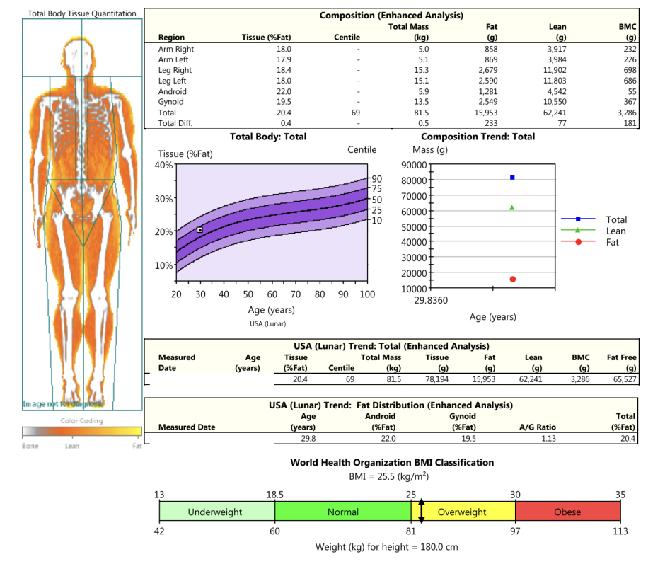

How Marcus Learned His 'Weight Gain' Was Actually Muscle The clinic charged $150. Worth it.
The bathroom tile was cold under Marcus’s feet at 6:22 AM. He stepped on the scale. It blinked 203.4. He stepped off. Stepped back on. 203.4 again. Last week: 201.8. Four weeks ago: 198.6. Two months ago: 195.2. His jaw tightened. He thought about the pizza on Friday.
The two IPAs on Saturday. The leg day he’d skipped because his hamstrings were still sore. His inner voice told him he was getting soft. He told himself he needed to cut calories. Maybe ditch carbs after 6 PM. Maybe add more cardio. Maybe stop lifting so heavy and focus on fat loss. That’s where his head was at when a guy at his gym – a powerlifter named Dave who’d been lifting for fifteen years and had calves the size of small tree trunks – saw him staring at his phone. “Scale got you down?” Dave asked. Marcus shrugged. “Talk to Emily,” Dave said. “She helped me figure out why the scale was lying to me.”
That’s how Marcus found my email. Subject line: “scale says I’m gaining fat. I don’t feel fatter.” He attached a photo from his last fitness competition – two years ago, 185 pounds, leaner than he was now. He wrote: “I don’t need to be that lean again. But I don’t understand why I’m going in the wrong direction.”
I called him the next morning. He was in his car, parked outside his office, engine off. Rain tapping on the windshield. Portland in March. “Tell me about your training,” I said. “I lift four days a week. Upper-lower split. I’ve been doing it for about four months.”
“Have you been getting stronger?” Pause. “Yeah. My deadlift went from 225 to 275. Squat from 185 to 225. Bench is up too.”
“How’s your protein?” “I aim for 160-170 grams a day. Mostly chicken, eggs, whey.” “Sleep?” “Seven hours most nights.” “How do your clothes fit?”
He paused again. “Same as before. Maybe a little looser in the waist.”
“When was your last body fat measurement?” “Never.”
That’s when we started talking about body recomposition. Most people think your body has two modes: gaining weight or losing weight. Cut calories, lose weight. Eat more, gain weight. That’s the mental model. But there’s a third mode – recomposition – where you lose fat and gain muscle at the same time. The scale only shows the net. If you lose five pounds of fat and gain five pounds of muscle, the scale shows zero change. If you lose five pounds of fat and gain ten pounds of muscle, the scale goes up. That’s what was happening to Marcus. He was eating around maintenance calories – not a deficit, not a surplus. With enough protein and consistant progressive overload, his body was doing exactly what it’s supposed to do. Build muscle. Burn fat. The scale couldn’t see it. The Lean Body Mass Calculator can separate these two components.
I asked Marcus to get a DEXA scan. Not the bioelectrical impedance scale at his gym – the ones that can swing ±5% depending on hydration. Not skinfolds, which require a skilled tester. The real thing. Dual-energy X-ray absorptiometry. Gold standard. He found a sports medicine clinic two miles from his apartment. The scan cost $125. It took twelve minutes. He wore sweatpants and a t-shirt. No metal. No shoes. The technician asked him to lie still while the arm passed over him. He closed his eyes and listened to the hum. The results arrived the next day. Total body fat: 18.7%. Lean mass: 163.2 pounds.
Bone density: normal. Visceral fat: low – 0.3 liters, well below the 1.0 liter threshold where metabolic risk starts to climb. We didn’t have a baseline DEXA from four months ago. So we estimated his starting body fat using a Navy method tape test. It’s not perfect – error around ±4-6% – but good enough for a starting point. He measured his neck and waist. The formula gave him 21.8%. I rounded to 22%. At 198 pounds, 22% body fat means 43.6 pounds of fat, 154.4 pounds of lean mass. At his current 203 pounds and 18.7% body fat, that’s 38 pounds of fat, 165 pounds of lean mass. The math hit him like a truck. He had lost 5.6 pounds of fat. He had gained 10.6 pounds of muscle. The scale went up 5 pounds. His clothes fit the same because muscle is denser than fat – about 20% less space for the same weight. He stared at the numbers. “So I’ve been beating myself up over nothing?”
“You’ve been beating yourself up over the wrong number.”
The Body Recomposition Planner helped him see the next six months.
We set two goals. To start, maintain his strength gains. After that, bring his body fat down to 15% over the next six months.
That’s a loss of about 0.6% body fat per month – slow enough to preserve muscle, fast enough to see changes. The planner showed that at his current training volume and protein intake, he could expect to drop 0.5-1.0% body fat per month while gaining 0.5-1.0 pounds of muscle per month. “That’s it?” he asked. “Just keep doing what I’m doing?”
“Mostly. But I want you to stop weighing yourself daily.”
His face showed skepticism. “How will I know if I’m making progress?”
I gave him three things to track. Okay. strength. Every four weeks, test his big three lifts. If they’re going up and his waist isn’t growing, he’s winning. Then, skinfolds. He bought a set of plastic skin calipers for $25 online. We practiced the 3-site Jackson-Pollock protocol for men: chest, abdomen, thigh. Same time of day (morning, after voiding bladder), same hydration status, once a month. Also, progress photos. Same lighting, same angle, same shorts. Once a month. Marcus did his first 3-site skinfold a week later. Chest 14mm, abdomen 22mm, thigh 18mm. That put him at 18.9% – almost identical to his DEXA. He sat back in the chair. It creaked.
He didn't care. He texted me a photo of his lunch that day: chicken, rice, broccoli. “No more pizza Fridays,” he wrote. I told him he could still have pizza. Just track it. A month later, he texted me his deadlift PR: 295 pounds. His skinfolds had dropped to 13mm, 20mm, 16mm. That’s about 17.5% body fat. His weight? 205. Up two pounds. He didn’t care. “I stopped weighing myself daily,” he said. “Now I do it once a week, but I don’t react to the number. I react to how my belt feels. My belt is looser.”
That’s the shift. From scale-obsessed to body-aware. I asked Marcus what he would tell someone in his old shoes. He didn’t hesitate. “Get a DEXA. Or at least skinfolds. The scale is a liar. It doesn’t know the difference between muscle and fat. I almost cut calories and lost all my gains because of a number on a screen.”
He’s not wrong. Thousands of people every year get frustrated because the scale isn’t moving, while their bodies are quietly recomposing underneath. The problem isn’t their effort. It’s their measurement tool. If you’re lifting weights, eating enough protein, and sleeping well, stop trusting the scale to tell you the full story. Get a body fat measurement. Use the Lean Body Mass Calculator to see what’s really changing. The scale doesn’t know the difference between muscle and fat. Now you do.